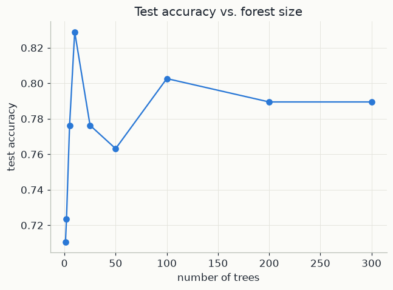
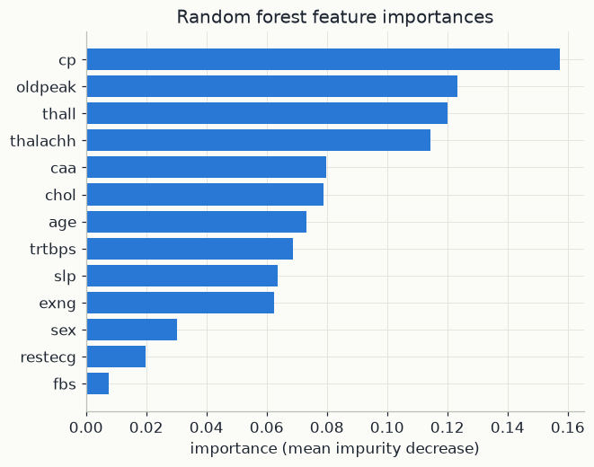

import numpy as np
import pandas as pd
import matplotlib.pyplot as plt
from sklearn.ensemble import RandomForestClassifier
from sklearn.tree import DecisionTreeClassifier
from sklearn.model_selection import train_test_split
from sklearn.metrics import accuracy_score
import mlutils
mlutils.set_style()1. A decision tree: splitting into purer groups
A decision tree predicts by asking a sequence of yes/no questions, such as "is chol above 250?". Each question is a split: it picks one feature j and a threshold s, and sends a patient left if x_j \le s and right otherwise. Training starts with all training patients in one node, the root. It picks the best split, applies it, and then repeats the same procedure inside each of the two new nodes, and so on (recursive splitting). A node that is not split any further is a leaf, and it predicts the majority class of the training patients that reached it. Geometrically, the tree cuts the feature space into boxes with sides parallel to the axes.
Impurity. "Best split" needs a score. Consider a node and let p_k be the fraction of its patients in class k, for k = 1, \dots, K (below, K = 2: heart disease or not). The Gini impurity is
G = 1 - \sum_{k=1}^{K} p_k^2
It has a direct reading: draw two patients at random (with replacement) from the node; G is the probability that they belong to different classes. A pure node has G = 0. With two classes, the worst case is a 50/50 mix, where G = 1 - 0.5^2 - 0.5^2 = 0.5. A common alternative is the entropy, measured in bits:
H = -\sum_{k=1}^{K} p_k \log_2 p_k
It is also 0 for a pure node and reaches 1 bit for a 50/50 mix. Both scores behave very similarly; scikit-learn uses Gini by default.
Impurity decrease. A split sends n_L of the node's n patients left and n_R right. Its quality is the drop in impurity, with each child weighted by its share of the patients:
\Delta G = G_{\text{parent}} - \frac{n_L}{n}\, G_L - \frac{n_R}{n}\, G_R
The weights matter: a large impure child costs more than a tiny one. At every node the tree tries all features and thresholds and keeps the split with the largest \Delta G. It is greedy: it takes the best single step and never looks ahead.
A hand example. A node holds 10 patients, 5 with disease and 5 without. Two candidate splits:
| node | patients | disease / no disease | p_{\text{disease}} | Gini 1 - p_1^2 - p_2^2 |
|---|---|---|---|---|
| parent | 10 | 5 / 5 | 0.5 | 1 - 0.25 - 0.25 = 0.5 |
| split A, left | 4 | 1 / 3 | 0.25 | 1 - 0.0625 - 0.5625 = 0.375 |
| split A, right | 6 | 4 / 2 | 0.667 | 1 - 0.444 - 0.111 = 0.444 |
| split B, left | 5 | 4 / 1 | 0.8 | 1 - 0.64 - 0.04 = 0.32 |
| split B, right | 5 | 1 / 4 | 0.2 | 1 - 0.04 - 0.64 = 0.32 |
Split A: \Delta G = 0.5 - 0.4 \times 0.375 - 0.6 \times 0.444 = 0.5 - 0.150 - 0.267 = 0.083.
Split B: \Delta G = 0.5 - 0.5 \times 0.32 - 0.5 \times 0.32 = 0.18.
The tree chooses split B. Entropy agrees: split B lowers it from 1 bit to 0.722 bits, a gain of 0.278 bits, against 0.125 bits for split A.
2. Why one deep tree overfits
Left alone, a tree keeps splitting until every leaf is pure. It then classifies its training set almost perfectly. But the deepest splits are decided by two or three patients each, so they follow the noise in those particular patients rather than a real pattern. Replace a handful of training patients and the tree can change completely, from the first split down, and its predictions change with it.
This is high variance. Think of the training set as one random draw from a population of possible training sets. The prediction \hat f(x) of the fitted tree for a new patient x is then a random quantity too. Its expected squared error splits into three parts: bias squared (how far the average prediction is from the truth), variance (how much the prediction jumps from one training set to another), and irreducible noise. A deep tree has low bias but high variance. Averaging many trees trained on independent training sets would keep the low bias and shrink the variance. We only have one training set, so a random forest manufactures new ones.
3. From trees to a forest: bootstrap, averaging, random features
Bootstrap samples. Each tree gets its own training set: n patients drawn with replacement from the n training patients. Some patients are drawn twice or more, and some are not drawn at all. A given patient is missed by one draw with probability 1 - 1/n, so it is missed by all n independent draws with probability
\Big(1 - \frac1n\Big)^n \;\longrightarrow\; e^{-1} \approx 0.368 \quad \text{as } n \text{ grows}
| n | 2 | 3 | 5 | 10 | 100 | 227 |
|---|---|---|---|---|---|---|
| (1 - 1/n)^n | 0.250 | 0.296 | 0.328 | 0.349 | 0.366 | 0.367 |
For n = 3: (2/3)^3 = 8/27 \approx 0.296. So each tree sees about 63% of the distinct patients. The other 37% are its out-of-bag patients, a free test set for that tree (scikit-learn reports the resulting score with oob_score=True).
Averaging correlated predictors. Let T_1, \dots, T_B be the predictions of B trees at the same input x. Each has variance \sigma^2, and any two have correlation \rho: they are not independent, because their bootstrap samples overlap. The forest outputs the average \bar T = \frac1B \sum_b T_b. Its variance is the sum of all B^2 covariances, divided by B^2. There are B diagonal terms, each \sigma^2, and B(B-1) off-diagonal terms, each \rho\sigma^2:
\mathrm{Var}(\bar T) = \frac{1}{B^2}\Big(B\sigma^2 + B(B-1)\,\rho\sigma^2\Big) = \rho\,\sigma^2 + \frac{1-\rho}{B}\,\sigma^2
The second term shrinks as trees are added; the first does not. More trees always help, but only down to a floor \rho\sigma^2 set by how similar the trees are. With \sigma^2 = 1:
| trees B | 1 | 10 | 100 | \infty |
|---|---|---|---|---|
| \rho = 0.5 | 1 | 0.55 | 0.505 | 0.5 |
| \rho = 0.2 | 1 | 0.28 | 0.208 | 0.2 |
Random feature subsets. The only way to lower the floor is to lower \rho. If one feature is very strong, nearly every bootstrap tree splits on it first, and the trees end up alike. A random forest therefore lets each split choose only among m features drawn at random from the p available; a common choice for classification is m \approx \sqrt p. Each individual tree gets a little worse, but the trees become much less correlated, and the average wins.
Voting. Each tree votes for a class and the forest predicts the majority. scikit-learn uses a soft version: it averages the trees' class probabilities and picks the largest, which almost always gives the same answer.
Feature importance. Every split in every tree lowers impurity by some \Delta G. Add up these decreases for all splits that use feature j, weighting each by the fraction n_t / N of training samples that reach that node t, and average over the trees:
\mathrm{Imp}(j) = \frac1B \sum_{b=1}^{B} \ \sum_{\text{nodes } t \text{ of tree } b \text{ that split on } j} \frac{n_t}{N}\, \Delta G_t
The scores are then rescaled to sum to 1. This is the mean decrease in impurity. It is computed on the training data, and it tends to favour features with many possible thresholds, so it is a quick guide rather than a final verdict.
In the code below. X has p = 13 clinical features and y is output (1 = disease). DecisionTreeClassifier grows one unrestricted Gini tree: the high-variance learner of Section 2. RandomForestClassifier(n_estimators=300) grows B = 300 trees, each on a bootstrap sample of the 227 training patients and, by default, with m = \lfloor\sqrt{13}\rfloor = 3 candidate features per split, then averages them. The loop over tree_counts traces how test accuracy settles as B grows, and forest.feature_importances_ is the mean decrease in impurity defined above.
4. The data
303 patients referred for a cardiac evaluation, 13 clinical measurements, and
output: whether significant heart disease was found. A realistic mix of continuous
measurements (cholesterol, max heart rate) and coded categorical ones (chest-pain
type, ECG results).
heart = pd.read_csv("data/heart.csv")
print(heart.shape)
print(heart["output"].value_counts().rename("count"))
heart.head()(303, 14) output 1 165 0 138 Name: count, dtype: int64 age sex cp trtbps chol fbs restecg thalachh exng oldpeak slp \ 0 63 1 3 145 233 1 0 150 0 2.3 0 1 37 1 2 130 250 0 1 187 0 3.5 0 2 41 0 1 130 204 0 0 172 0 1.4 2 3 56 1 1 120 236 0 1 178 0 0.8 2 4 57 0 0 120 354 0 1 163 1 0.6 2 caa thall output 0 0 1 1 1 0 2 1 2 0 2 1 3 0 2 1 4 0 2 1
X = heart.drop(columns=["output"])
y = heart["output"]
X_train, X_test, y_train, y_test = train_test_split(X, y, test_size=0.25, random_state=42, stratify=y)
print(f"train: {len(X_train)}, test: {len(X_test)}")train: 227, test: 76
5. One tree vs. a forest
First, a single unrestricted decision tree — it can split on anything, as many times as it wants, so it fits the training set almost perfectly and often pays for it on new data.
tree = DecisionTreeClassifier(random_state=42).fit(X_train, y_train)
print(f"single tree — train accuracy: {tree.score(X_train, y_train):.3f}, "
f"test accuracy: {accuracy_score(y_test, tree.predict(X_test)):.3f}")single tree — train accuracy: 1.000, test accuracy: 0.724
forest = RandomForestClassifier(n_estimators=300, random_state=42).fit(X_train, y_train)
acc_forest = accuracy_score(y_test, forest.predict(X_test))
print(f"forest (300 trees) — train accuracy: {forest.score(X_train, y_train):.3f}, "
f"test accuracy: {acc_forest:.3f}")forest (300 trees) — train accuracy: 1.000, test accuracy: 0.789
The forest's training accuracy is lower than the single tree's — each tree only ever saw a bootstrap resample and a random slice of features, so no individual tree memorises everything. But averaging over 300 such trees usually generalises better, which is the number that matters.
6. How many trees are enough?
Trees are cheap to add and never hurt on their own (with this scheme); the only question is how many are needed before the ensemble average stops moving.
tree_counts = [1, 2, 5, 10, 25, 50, 100, 200, 300]
accs = []
for n in tree_counts:
m = RandomForestClassifier(n_estimators=n, random_state=42).fit(X_train, y_train)
accs.append(accuracy_score(y_test, m.predict(X_test)))
fig, ax = plt.subplots(figsize=(6.5, 4.5))
ax.plot(tree_counts, accs, color=mlutils.BLUE, marker="o")
ax.set(xlabel="number of trees", ylabel="test accuracy", title="Test accuracy vs. forest size")[Text(0.5, 0, 'number of trees'), Text(0, 0.5, 'test accuracy'), Text(0.5, 1.0, 'Test accuracy vs. forest size')]

7. Which features matter?
Section 3 defined each feature's importance as its mean decrease in impurity: the impurity reduction of every split on that feature, weighted by how many samples reach the split, averaged over all trees.
importances = pd.Series(forest.feature_importances_, index=X.columns).sort_values(ascending=False)
fig, ax = plt.subplots(figsize=(6.5, 5))
ax.barh(importances.index[::-1], importances.values[::-1], color=mlutils.BLUE)
ax.set(xlabel="importance (mean impurity decrease)", title="Random forest feature importances")
importancescp 0.157507 oldpeak 0.123321 thall 0.120078 thalachh 0.114468 caa 0.079881 chol 0.078990 age 0.073159 trtbps 0.068857 slp 0.063579 exng 0.062523 sex 0.030288 restecg 0.019888 fbs 0.007461 dtype: float64

cp (chest pain type), oldpeak (ST depression from exercise) and thall
(thalassemia test result) come out on top — all clinically plausible signals for
heart disease, which is a good sanity check that the model learned something
sensible rather than an artefact of the data.
Exercises
Exercise 1: Feature ablation
Drop the top feature from X entirely and retrain. Does test accuracy drop by much?
What does that tell you about redundancy between features?
Solution
top_feature = importances.index[0]
X2 = X.drop(columns=[top_feature])
X2_train, X2_test, _, _ = train_test_split(X2, y, test_size=0.25, random_state=42, stratify=y)
m2 = RandomForestClassifier(n_estimators=300, random_state=42).fit(X2_train, y_train)
print(accuracy_score(y_test, m2.predict(X2_test)))
Accuracy usually drops only a little: other correlated features (e.g. thalachh,
oldpeak) carry overlapping information, so the forest routes around a missing
feature.
Exercise 2: Depth-limited trees
Retrain the single DecisionTreeClassifier with max_depth=3. Compare its train and
test accuracy to the unrestricted tree. Is a shallow single tree competitive with the
forest here?
Solution
A depth-3 tree trades away training accuracy but usually closes much of the test- accuracy gap to the unrestricted tree, since it can no longer memorise noise — though it typically still falls short of the forest, which averages away variance without having to sacrifice any single tree's depth.
Key takeaways
- A random forest averages many trees, each trained on a bootstrap resample with a random subset of features per split; the randomness decorrelates their errors so the average generalises better than any single deep tree.
- Feature importances come free from training and are a fast way to sanity-check that a model is picking up on plausible signal.
- More trees essentially never hurts (only costs compute); the accuracy curve flattens once there are enough to average out tree-to-tree variance.